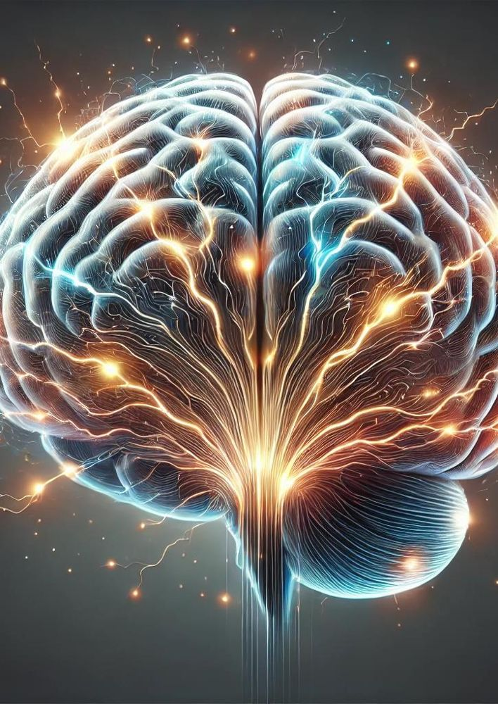
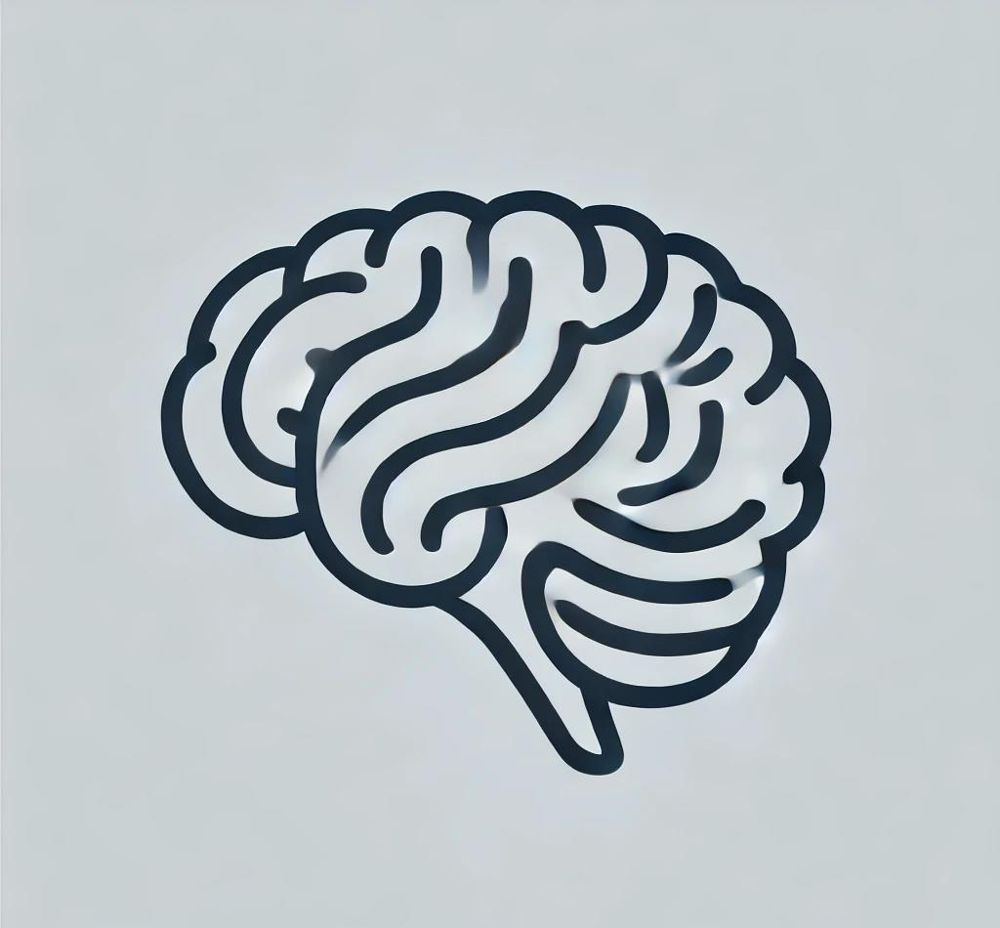

What if a mental state is defined by what it does, not what it is made of? Take the tour: Putnam’s functionalism, its advantages, and the three issues on the specification – inverted qualia, Block’s China brain and Mary applied to function.
Think of what makes something a mousetrap. Mousetraps can be made of wood and springs, plastic and glue, or a bucket and a ramp. What makes them all mousetraps is not what they are made of but what they do: catch mice. Functionalism says mental states are like this. AQA’s definition: all mental states can be characterised in terms of functional roles which can be multiply realised. To be in pain is to be in a state that is typically caused by bodily damage, and typically causes distress, the desire for it to stop, and wincing or crying out. Whatever plays that role – neurons in a human, something very different in an octopus or a robot – is pain.
Functionalism emerged in the 1960s, above all in the work of Hilary Putnam, as a response to the problems of behaviourism and identity theory. It keeps behaviourism’s link between mind and behaviour, but treats mental states as real inner causes; it keeps identity theory’s physicalism, but allows that the same mental state can be realised in different physical ways. It is probably the most widely held theory of mind among philosophers and cognitive scientists, and it underlies the idea that a computer could, in principle, have a mind. The question is whether a role can capture everything about a mental state – especially what it is like to be in it.
The handout defines functionalism as the theory that mental properties, such as being in pain, can be identified with functional states. A functional state is one with specific inputs and specific outputs, where the outputs can be behaviour and/or other mental states. What a mental state is, is what it does: it is active, not static.
In ‘The Nature of Mental States’ (set text), Putnam writes:
‘I propose the hypothesis that pain, or the state of being in pain, is a functional state of a whole organism.’Hilary Putnam, ‘The Nature of Mental States’ (1967/1975), as quoted in the departmental handout
Putnam spells this out (as summarised in the handout): all organisms capable of feeling pain are probabilistic automata; every organism capable of feeling pain has a certain type of functional organisation; an organism cannot be broken down into parts that are separately organisms with this organisation; and for every organism there is a subset of sensory inputs such that it is in pain when and only when some of its inputs are in that subset. The point is that it is the whole organism that is in pain, not its parts, and pain is explained by its role in the organism’s functional organisation.
The handout notes that ‘function’ is a mathematical term brought into philosophy by Frege. A function takes an input (from its domain) and gives an output (in its range). ‘Plus’ takes 2 and 2 and gives 4. In the same way, a mental state takes inputs – damaged nerve fibres – and yields outputs – certain behaviour and further mental states. The function explains why, given the nerve damage, those outputs follow.
The handout’s analogy: a computer has software, where the functions are specified, and hardware that runs it. Different computers with different hardware can run the same program. Likewise, different animals with different ‘hardware’ (brains) can run the same ‘software’ (mental states). The mind is to the brain as software is to hardware.


Because a mental state is defined by its role, it can be realised by many different physical states – this is multiple realisability. Putnam compares the human eye and the octopus eye: very different structures that perform the same function. The handout adds convergent evolution: unrelated species in similar environments evolve similar features (the thylacine, or Tasmanian tiger, looked like a dog though it was a marsupial), because the environment demands similar functions.
Functionalism is officially neutral. Putnam notes that functional states are not incompatible with dualism, although the hypothesis is mechanistic. In principle, a non-physical state could play a functional role. In practice, most functionalists are physicalists: they think the realisers of functional roles in our world are all physical.
The handout distinguishes role functionalists, who identify pain with what is common to everyone in a state that plays the pain role, from realiser functionalists, who identify pain in a given creature with whatever physical state plays the role in that creature’s kind. David Lewis, if he counted as a functionalist, was a realiser functionalist: pain in humans is a neural state; pain in Martians might be something quite different.
The handout gives two main advantages: functionalism makes sense of multiple realisability (unlike identity theory) and of the distinctness of mental states from behaviour (unlike behaviourism).
Identity theory says pain is a specific type of brain process, so any animal or alien in pain must have that very brain process. Since we think, very plausibly, that animals and other creatures with very different brains can feel pain, identity theory looks implausible. Functionalism lets pain be realised by different brain states in different creatures, because what makes it pain is its role.
Functionalism can explain why an organism in pain may not produce its usual outputs. Putnam describes the pain role as partly characterised by the fact that the sense organs responsible for the inputs are organs whose function is to detect damage to the body. But this does not mean the organism will always avoid the damaging condition; it will avoid it unless not avoiding it leads to a more valued goal. (Paraphrased from the quotation in the handout.) So the super-spartan, or the person hiding from a violent mob who keeps quiet despite pain, is still in pain: the state is playing its role, but other states (the desire not to be discovered) override the usual output.
Notice that all three issues on the specification concern qualia. Functionalism is at its best on intentional states such as belief and desire, which are naturally understood in terms of their role in reasoning and action. The objections claim that phenomenal properties are not captured by role: you could have the role with different qualia (Stop 3), with no qualia (Stop 4), or know all about the role without knowing the qualia (Stop 5).
Imagine that when you look at the sky you have the experience I have when I look at a ripe tomato, and vice versa: our colour qualia are systematically inverted. Because we grew up in the same linguistic community, you learned to call the sky ‘blue’ and tomatoes ‘red’, just as I did. We make the same discriminations, sort colours the same way, stop at red lights and say ‘what a lovely blue sky’. We are functionally identical: the same inputs (the same wavelengths) produce the same outputs. Yet our experiences differ. So mental properties cannot be functional properties.
The departmental slides note that there may be real cases: some people with unusual colour vision (‘pseudo-normal’ vision) might have red and green sensations reversed while behaving normally, though this would be difficult if not impossible to prove. (The handout’s figure for how common this is has not been verified here.)
The handout gives Patricia Churchland’s response: if inverted qualia occurred, it would not follow that there was functional duplication. Our responses to colour are not exhausted by naming. People would respond differently to identical paintings: one finds a sunset warm, another cold. Colour experiences have rich connections to emotion, memory and association, so a difference in qualia would show up somewhere in function. Colour space is also asymmetrical – there are more distinguishable shades of some hues than others – so a simple swap would be detectable.
Inverted qualia appear conceivable, but it does not follow that they are possible. If functionalism is true, the scenario is impossible, just as water without hydrogen is. This brings in the familiar question of what conceivability shows (see the zombie argument).
Response 1 only blocks simple inversions. We can imagine a more subtle transformation that preserves all the asymmetries and associations – or an inversion in a creature whose colour space is symmetrical. And the defender of Response 2 needs an independent reason to think the scenario is impossible; otherwise it simply assumes functionalism.
The handout notes a proposal to mix functionalism with identity theory: the functional role explains why I can respond to colours, but the qualia themselves are explained by the physical, neural properties of the system. Inverted qualia would then be possible only with a physical difference in the brain – compatible with physicalism, though not pure functionalism.
The inverted qualia argument is persuasive because it seems obvious that what it is like to see red is not the same as what seeing red does. Churchland’s reply shows that real-life inversions would probably be detectable, but the argument only needs possibility. The hybrid response is honest: it concedes that functional role does not fix qualia, but keeps physicalism. That concession is significant – it means functionalism alone is not a complete theory of mind.
The second issue is the possibility of a functional duplicate with no mentality or qualia at all. In ‘Troubles with Functionalism’ (1978; set text §§1–2), Ned Block asks us to imagine converting the government of China to functionalism and persuading officials that it would enhance their international prestige to realise a human mind for an hour. Each of the billion or so people in China is given a specially designed two-way radio that connects them, in the appropriate ways, to other people and to an artificial body. Each person plays the role of a neuron (or a functional unit), sending signals when they receive certain signals. Block argues that such a system is not physically impossible, and it could be functionally equivalent to you for a short time – say an hour. (Paraphrased from the passage quoted in the departmental slides.)
Block’s question: when the system is in the functional state that realises pain, is anything in pain? It seems very doubtful that the whole system has any mental states at all – that there is something it is like to be the nation of China. Each person has their own experiences, of course, but none of them is experiencing your pain. So we can have perfect functional duplication without consciousness. Whether such a system could actually be built is irrelevant: in principle it shows the point.
Block calls this an ‘absent qualia’ case. It mirrors the zombie argument but without needing physical identity – only functional identity.
Our intuition that the system is not conscious may just reflect its unfamiliar size and speed. A neuron, looked at alone, does not seem conscious either; we have no idea what it would be like to be a system of a billion people. If it really duplicated the functional organisation of a brain, perhaps it would be conscious. Intuitions about such bizarre cases are unreliable.
The China system would run far more slowly than a brain (radios versus neurons), and a brain has around 86 billion neurons, many times more than China has people. Real functional duplication might require timing and fine-grained detail the system could not have. So premise 2 may be false in practice.
Block’s point concerns possibility, not practicality: we can imagine enough people and fast enough signals. And Response 1 risks making functionalism unfalsifiable – any counterexample can be met by saying ‘perhaps it is conscious after all’.
As with inverted qualia, one could hold that functional role is sufficient for intentional states (perhaps the China system has beliefs), but that qualia also depend on the right physical realiser – neurons, not people with radios. This concedes Block’s point about qualia.
The China case is powerful because it isolates the functionalist’s central claim – that only organisation matters – and pairs it with a realiser in which consciousness seems absent. The best functionalist reply, that the intuition is unreliable, has some force, but it amounts to biting the bullet. A fair judgement: the China brain shows that if functionalism is true, it has the surprising consequence that a nation could have experiences; most philosophers find this less plausible than the claim that qualia depend on more than functional role.
The third issue: the knowledge/Mary argument can be applied to functional facts – no amount of facts about function suffices to explain qualia. Jackson himself makes the point: tell me everything about what is going on in a living brain – the kinds of states, their functional role, their relations to other states – and you will still not have told me about the hurtfulness of pains or the characteristic experience of tasting a lemon. (Paraphrased from the handout’s quotation of Jackson.)
The handout links this to David Chalmers’ distinction (influenced by William James). Functionalism may answer the easy problems of consciousness – how the mind works from the third-person perspective, how it processes information and controls behaviour. But it cannot answer the hard problem: why all this functioning is accompanied by subjective experience, why there is something it is like. As Colin McGinn puts it in the departmental slides, it seems impossible to see how technicolour phenomenology could arise from soggy grey matter (paraphrased).
The functionalist can use the same responses as the physicalist in property dualism.
Mary gains new abilities – to remember, imagine and recognise red – not new facts. This fits functionalism well: abilities are themselves functional capacities. Lewis, of course, was a functionalist-style physicalist.
Mary becomes acquainted with a functional state she already knew everything about by description.
Mary acquires a phenomenal concept of a functional state she already knew about under functional concepts. Same fact, new way of knowing it.
These replies are strongest when the old fact is a physical fact with a rich intrinsic nature (a particular neural state). Functional facts are abstract and relational – facts about what causes what. It is especially hard to see how knowing what red is like could be just another way of knowing a pattern of causal relations. This is why the hybrid response (qualia fixed by the physical realiser) tempts many functionalists.
The Mary argument is if anything stronger against functionalism than against identity theory, because functional facts are purely relational, while qualia seem intrinsic (recall AQA’s definition in 3.4.1). A sustained judgement: the three qualia objections together suggest that functionalism is a strong theory of intentional states but an incomplete theory of phenomenal states; the most defensible position is a hybrid that is functionalist about belief and desire and looks to the physical realiser, or treats the hard problem as still open, for qualia.
Functionalism combines the best of its predecessors: like identity theory, it treats mental states as real inner causes; like behaviourism, it ties them to behaviour; and unlike either, it accommodates multiple realisability and the distinctness of mental states from behaviour. It gives a plausible account of intentional states, whose identity really does seem to lie in their role in reasoning and action. Its weakness is phenomenal consciousness. The inverted qualia, China brain and Mary arguments all claim that qualia are not fixed by functional role, and the most persuasive functionalist replies either deny the intuitions or concede that qualia depend on the physical realiser. A sustained judgement: functionalism is the most successful physicalist theory on the specification for intentional states, but it does not solve the hard problem; at best it is part of the truth about the mind.